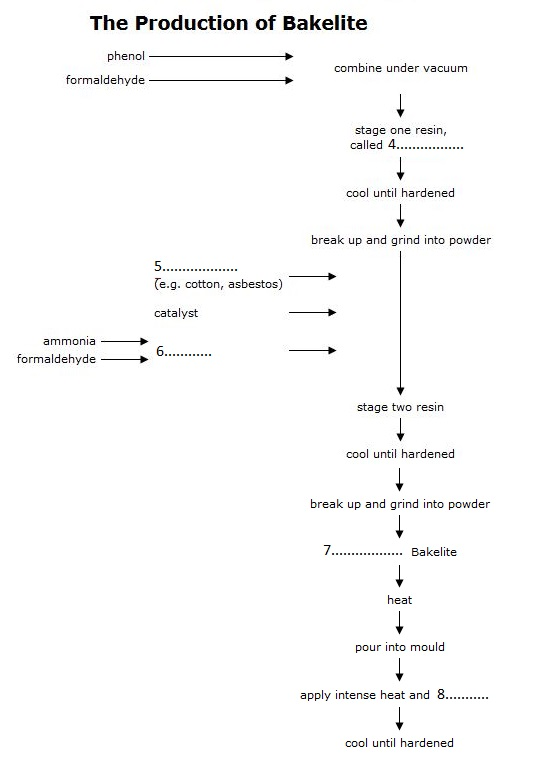

In 1907, Leo Hendrick Baekeland, a Belgian scientist working in New York, discovered and patented a revolutionary new synthetic material. His invention, which he named 'Bakelite', was of enormous technological importance, and effectively launched the modern plastics industry.
The term 'plastic' comes from the Greek plassein, meaning 'to mould' Some plastics are derived from natural sources, some are semi-synthetic (the result of chemical action on a natural substance), and some are entirely synthetic, that is, chemically engineered from the constituents of coal or oil. Some are 'thermoplastic', which means that, like candlewax, they melt when heated and can then be reshaped. Others are 'thermosetting': like eggs, they cannot revert to their original viscous state, and their shape is thus fixed for ever Bakelite had the distinction of being the first totally synthetic thermosetting plastic.
The history of today's plastics begins with the discovery of a series of semi-synthetic thermoplastic materials in the mid-nineteenth century. The impetus behind the development of these early plastics was generated by a number of factors - immense technological progress in the domain of chemistry, coupled with wider cultural changes, and the pragmatic need to find acceptable substitutes for dwindling supplies of 'luxury' materials such as tortoiseshell and ivory.
Baekeland's interest in plastics began in 1885 when, as a young chemistry student in Belgium, he embarked on research into phenolic resins, the group of sticky substances produced when phenol (carbolic acid) combines with an aldehyde (a volatile fluid similar to alcohol). He soon abandoned the subject, however, only returning to it some years later. 8y 1905 he was a wealthy New Yorker, having recently made his fortune with the invention of a new photographic paper. While Baekeland had been busily amassing dollars, some advances had been made in the development of plastics. The years 1899 and 1900 had seen the patenting of the first semi-synthetic thermosetting material that could be manufactured on an industrial scale. In purely scientific terms, Baekeland's major contribution to the field is not so much the actual discovery of the material to which he gave his name, but rather the method by which a reaction between phenol and formaldehyde could be controlled, thus making possible its preparation on a commercial basis. On 13 July 1907, Baekeland took out his famous patent describing this preparation, the essential features of which are still in use today.
The original patent outlined a three-stage process, in which phenol and formaldehyde (from wood or coal) were initially combined under vacuum inside a large egg-shaped kettle. The result was a resin known as Novalak, which became soluble and malleable when heated. The resin was allowed to cool in shallow trays until it hardened, and then broken up and ground into powder. Other substances were then introduced: including fillers, such as woodflour, asbestos or cotton, which increase strength and moisture resistance, catalysts (substances to speed up the reaction between two chemicals without joining to either) and hexa, a compound of ammonia and formaldehyde which supplied the additional formaldehyde necessary to form a thermosetting resin. This resin was then left to cool and harden, and ground up a second time. The resulting granular powder was raw Bakelite, ready to be made into a vast range of manufactured objects. In the last stage, the heated Bakelite was poured into a hollow mould of the required shape and subjected to extreme heat and pressure, thereby 'setting' its form for life.
The design of Bakelite objects, everything from earrings to television sets, was governed to a large extent by the technical requirements of the moulding process. The object could not be designed so that it was locked into the mould and therefore difficult to extract. A common general rule was that objects should taper towards the deepest part of the mould, and if necessary the product was moulded in separate pieces. Moulds had to be carefully designed so that the molten Bakelite would flow evenly and completely into the mould. Sharp corners proved impractical and were thus avoided, giving rise to the smooth, 'streamlined' style popular in the 1930s. The thickness of the walls of the mould was also crucial’ thick walls took longer to cool and harden, a factor which had to be considered by the designer in order to make the most efficient use of machines.
Baekeland's invention, although treated with disdain in its early years, went on to enjoy an unparalleled popularity which lasted throughout the first half of the twentieth century. It became the wonder product of the new world of industrial expansion - 'the material of a thousand uses'. Being both non-porous and heat-resistant, Bakelite kitchen goods were promoted as being germ-free and sterilisable. Electrical manufacturers seized on its insulating properties, and consumers everywhere relished its dazzling array of shades, delighted that they were now, at last, no longer restricted to the wood tones and drab browns of the preplastic era. It then fell from favour again during the 1950s, and was despised and destroyed in vast quantities. Recently, however, it has been experiencing something of a renaissance, with renewed demand for original Bakelite objects in the collectors' marketplace, and museums, societies and dedicated individuals once again appreciating the style and originality of this innovative material.
Complete the summary.
Choose ONE WORD ONLY from the passage for each answer. Write your answers in boxes 1-3 on your answer sheet.
Some plastics behave in a similar way to 1 . In that they melt under heat and can be moulded into new forms. Bakelite was unique because it was the first material to be both entirely 2 in origin, and thermosetting.
There were several reasons for the research into plastics in the nineteenth century, among them the great advances that had been made in the field of 3 and the search for alternatives to natural resources like ivory.
Complete the flow-chart.
Choose ONE WORD ONLY from the passage for each answer
Write your answers in boxes 4-8 on your answer sheet.

Choose TWO letters A-E.
Write your answers in boxes 9-10 on your answer sheet.
NB Your answers may be given in either order.
Which TWO of the following factors influencing the design of Bakelite objects are mentioned in the text?
A the function which the object would serve
B the ease with which the resin could fill the mould
C the facility with which the object could be removed from the mould
D the limitations of the materials used to manufacture the mould
E the fashionable styles of the period
Do the following statements agree with the information given in Reading Passage?
In boxes 11-13 on your answer sheet, write
TRUE if the statement agrees with the information
FALSE if the statement contradicts the information
NOT GIVEN if there is no information on this
11 Modern-day plastic preparation is based on the same principles as that patented in 1907.
12 Bakelite was immediately welcomed as a practical and versatile material.
13 Bakelite was only available in a limited range of colours.
Please Submit to view your score, solution and explanations.